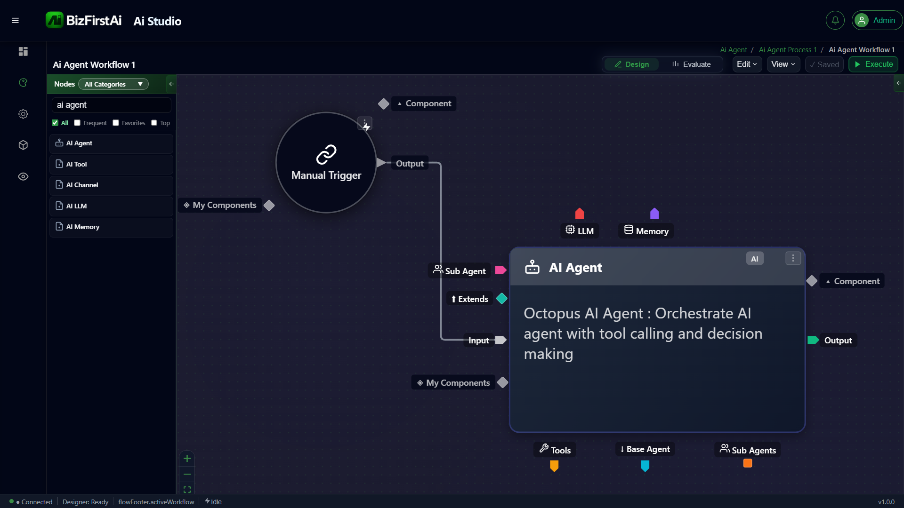

AI Agent Ports
The AI Agent node in BizFirstAI Studio exposes six distinct port types. Each port defines a different kind of relationship — either a runtime data flow or a static structural composition resolved before execution.

Port Diagram
Port Types
Ports fall into two categories: Runtime ports carry data during execution, and Static ports define structural relationships that are resolved at design time before the workflow runs.
Input
Receives data flowing into the agent from upstream nodes in the workflow. All execution data arrives through this port.
Output
Emits the agent's result downstream. All nodes that depend on this agent's reasoning receive data through this port.
It Extends
Connects this agent to a parent base agent. The current agent inherits the parent's configuration — LLM settings, tools, memory — at design-time resolution.
Sub Agent
Attaches a subordinate agent for task delegation. The main agent orchestrates its sub-agents, assigning subtasks and aggregating results.
Component
Used to attach composite child services to this agent. For example, combining a document server and email server into a single composite agent capability.
My Components
Exposes this agent's own composite component slots — the services it owns and makes available to other nodes that connect to it as a component.
Pre-Connected Satellites on Manual Trigger
In the screenshot, the Manual Trigger node already has two satellite nodes wired — these are passed through to the AI Agent as its backing services:
| Satellite | Purpose |
|---|---|
| LLM | The language model provider (e.g. OpenAI, Azure OpenAI) that backs the agent's reasoning. Defines model, temperature, and token limits. |
| Memory | The memory store the agent reads from and writes to during execution. Enables multi-turn context, session memory, or persistent knowledge. |
Agent Internal Capability Tabs
The AI Agent node surfaces three internal tabs at the bottom of the node panel, each configuring a different aspect of the agent's capabilities:
| Tab | Description |
|---|---|
| Tools | Tool-calling integrations the agent can invoke — APIs, functions, database queries, external services. |
| Base Agent | The parent agent this agent inherits from via It Extends. Shows the resolved inheritance chain. |
| Sub Agents | Child agents orchestrated under this agent. Each sub-agent handles a delegated subtask. |
Port Relationship Reference
| Port | Category | Resolved When | Purpose |
|---|---|---|---|
| Input | Runtime | Execution | Receives upstream workflow data |
| Output | Runtime | Execution | Emits results downstream |
| Component | Static — Composite | Design time | Attaches child service components |
| It Extends | Static — Inheritance | Design time | Inherits base agent configuration |
| Sub Agent | Static — Delegation | Design time | Nests subordinate agents |
| My Components | Static — Composite | Design time | Exposes owned component slots |